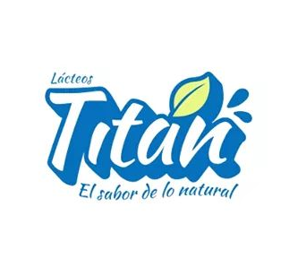

LÁCTEOS TITÁN
Lácteos Títan tiene como gerente administrativo a Joseph Lino, quien accedió a brindarnos una entrevista en la que nos cuenta cómo es que surge esta empresa, cuáles son sus objetivos y la posible repercusión del contexto de pandemia.
Según el Sr. Lino, la idea surge de sus experiencias como asistente administrativo en un centro médico de Chorrillos en la cual él decidió llevar una vida sana y ¿por qué no? compartirla con más personas a través de su marca. Esta empresa trabaja con nutricionistas que brindan la certificación de sus productos saludables (sin preservantes o colorantes), además de brindar capacitación al cliente.
Ve aquí la entrevista 👇
Volver arriba